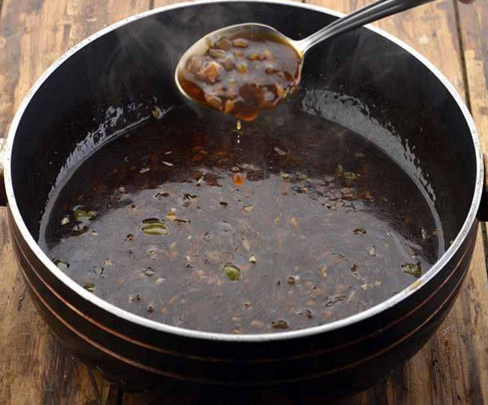

- Goes with Manchurian Balls (#12)
Ingredients

- 1 tbsp garlic (finely chopped)
- 2 tsp green chillies (finely chopped)
- 2 tsp ginger (finely chopped)
- 1 cup vegetable stock or water
- 1 tbsp soy sauce
- 1 tbsp corn flour mixed with 1 cup water
- 2 pinches sugar
- 2 tbsp oil
- Salt
Instructions
- Heat oil in nonstick pan on high flame.
- Add garlic, green chillies, and ginger and stir fry over high flame for a few seconds.
- Add water, soy sauce, corn flour paste, sugar, and salt and simmer for a few minutes.
- Serve hot.